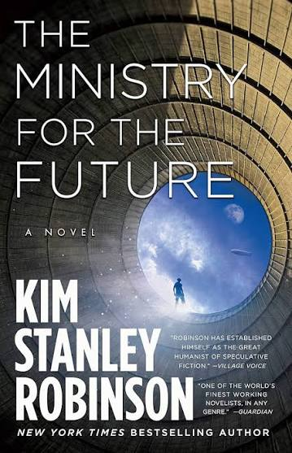
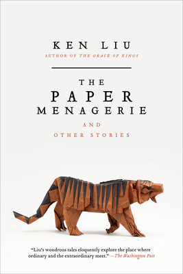

This is a book club where my beloved friends and I read and chat about books!
Schedule
Here you can find what our book club schedule is!
Our next book club will be:
| Date | Event |
|---|---|
| Tuesday August 4, 2026 | Book Club to discuss: Yesteryear |
| Saturday September 5, 2027 | Book Club to discuss: Vote for the next book below! |
Next Book Suggestions
Here's the options for what we can read next. Please vote for the next book here.
| Cover | Title / Description | Author | Pages |
|---|---|---|---|
|
Audition for the Fox
A trickster fox god challenges an under achieving acolyte to save herself by saving her own ancestors. |
Martin Cahill | 192 | |
|
The Diamond Age
A coming of age story focused on a young girl named Nell, set in a future world in which nanotechnology affects all aspects of life. |
Neal Stephenson | 499 | |
|
 |
The Ministry for the Future
A story that follows a new UN agency fighting to fix climate change. |
Kim Stanley Robinsone | 563 |
|
Labryrinths
A collection of short stories that explores philosophical paradoxes, infinite libraries, shifting realities, and the mazes of time and memory. |
Jorge Luis Borges | 260 | |

|
Ancilliary Justice
A soldier on a quest for revenge. |
Ann Leckie | 386 |
|
 |
Paper Menagerie and Other Stories
A collection of short stories that explore love, race, history, and technology. |
Ken Liu | 450 |
Previously Read Books
Here's what we've read in the past:
| Date Read | Cover | Title / Description | Author | Pages |
|---|---|---|---|---|
| August 4, 2026 |

|
Yesteryear
A modern day "tradwife" influencer wakes up in 1855, and is forced to live the harsh reality of pioneer life she only pretended to portray online, leading to a dark, satirical story about fame, faith, and the performance of womanhood. Discussion questions. |
Caro Claire Burke | 400 |
| June 27, 2026 |

|
Tomorrow and Tomorrow and Tomorrow
Two friends come together as creative partners to create a video game. This brings them success, but what else? Discussion questions. |
Gabrielle Zevin | 300 |
| June 6, 2026 |

|
The Hitchhiker's Guide to the Galaxy
After Earth is unexpectedly destroyed, an ordinary man is swept into a wild adventure across space with an eccentric group of companions. Discussion questions. |
Douglas Adams | 216 |
| May 9, 2026 |

|
Recursion
A sci-fi thriller about a mysterious phenomenon called False Memory Syndrome, where people experience vivid memories of lives they never lived, causing them to go mad. Discussion questions. |
Blake Crouch | 329 |
| April 12, 2026 |

|
Stories of Your Life and Others
A collection of Black-Mirror-esque short stories. Discussion questions. |
Ted Chiang | 281 |
| March 12, 2026 |

|
All Systems Red (Murderbot #1)
Company-supplied droid becomes self-aware. Adventures ensue. Discussion questions. |
Martha Wells | 144 |
Past Book Suggestions
You can find previously suggested books here: Book Suggestions
If you were intrigued by a book that didn't win the vote this time around, worry not! I will catalog all the proposed books here! That way, we can throw it back on the ballot in the future OR you can reference them for your own reading pleasure.